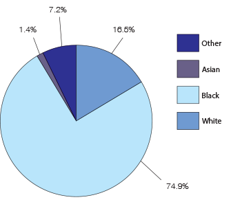

Public Safety and Justice Report by Ward
Ward 5

Julie moved to Ward 5 from Atlanta with her family about a year ago. While she was aware of the reputation of crime in D.C., she doesn’t let it influence her day-to-day activities. Instead, she takes simple precautions and walks with a purpose to avoid crime or conflict.
Graphs & Statistics
Race
Demographic Statistics
- General
- Population in 2010: 74,308 people
- In 2013, the infant mortality rate per 1,000 live births was highest in Ward 5
- Income
- 2013 household income: $113,165
- Education
- 33% of the ward had a bachelor's degree or higher
Crime Statistics
- Violent Crime
- Druing this time period, 71% of the District's homicides were reported in wards 5,7, and 8
- Property Crime
- 24% increase in property crime from 2009-2014
- 564 burglaries
- Reported the highest number of stolen vehicles (567)
- TFA increases (71% increase)